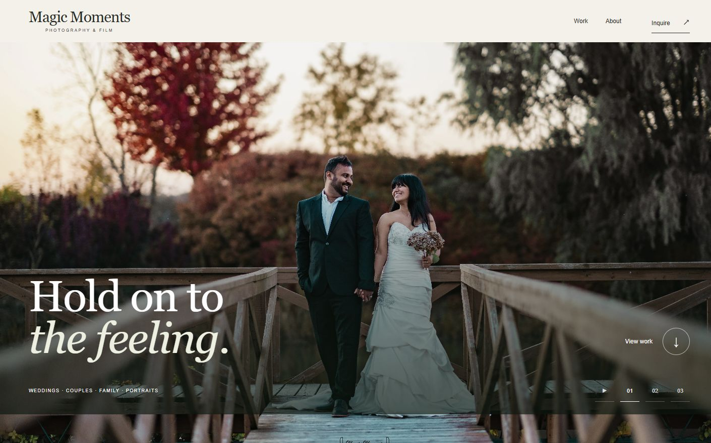
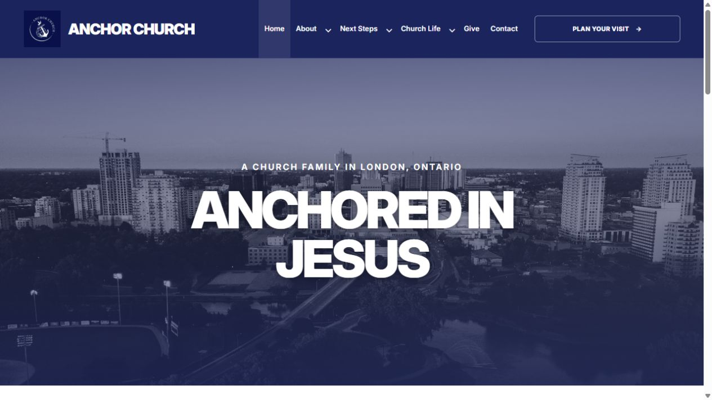
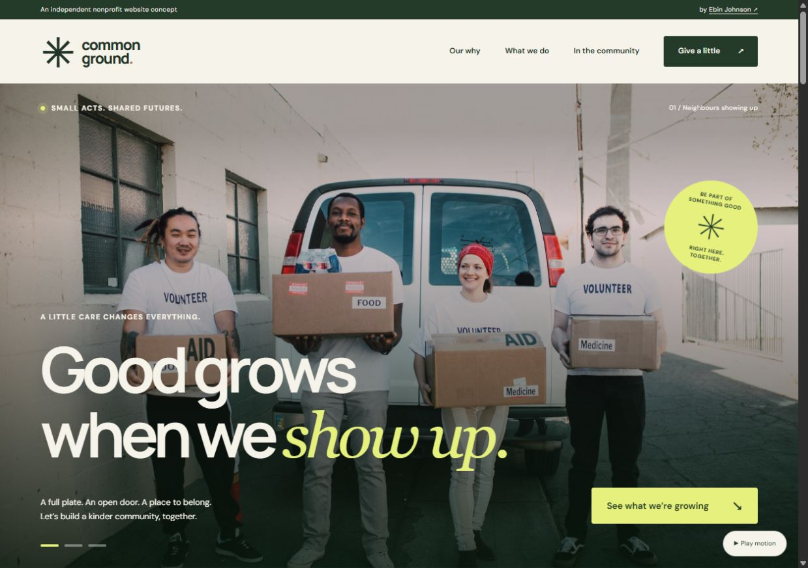
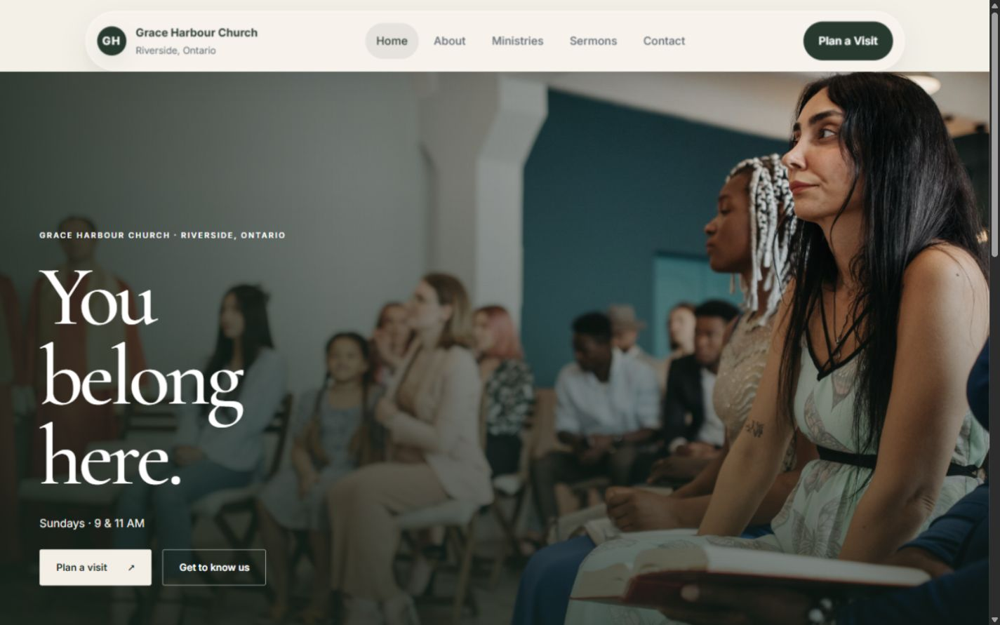
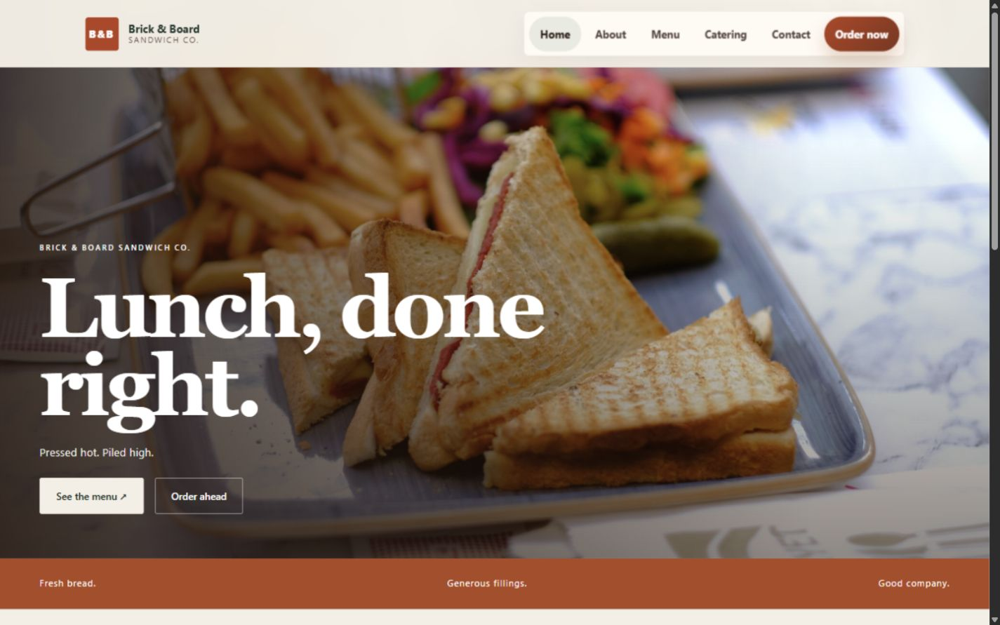
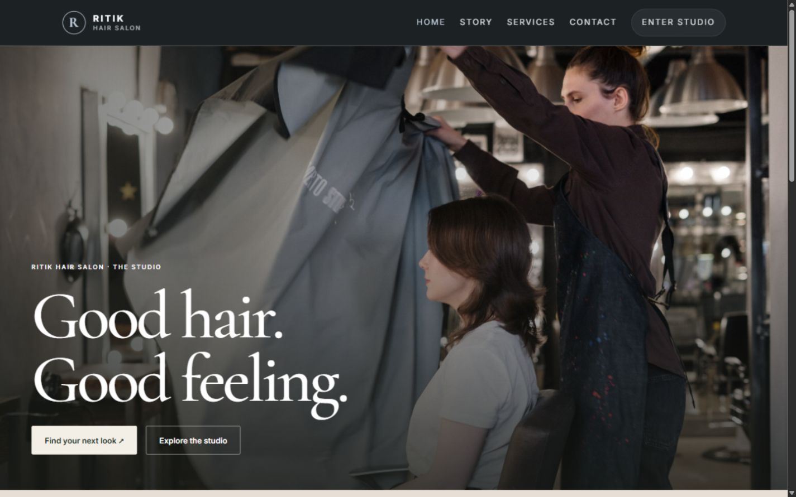
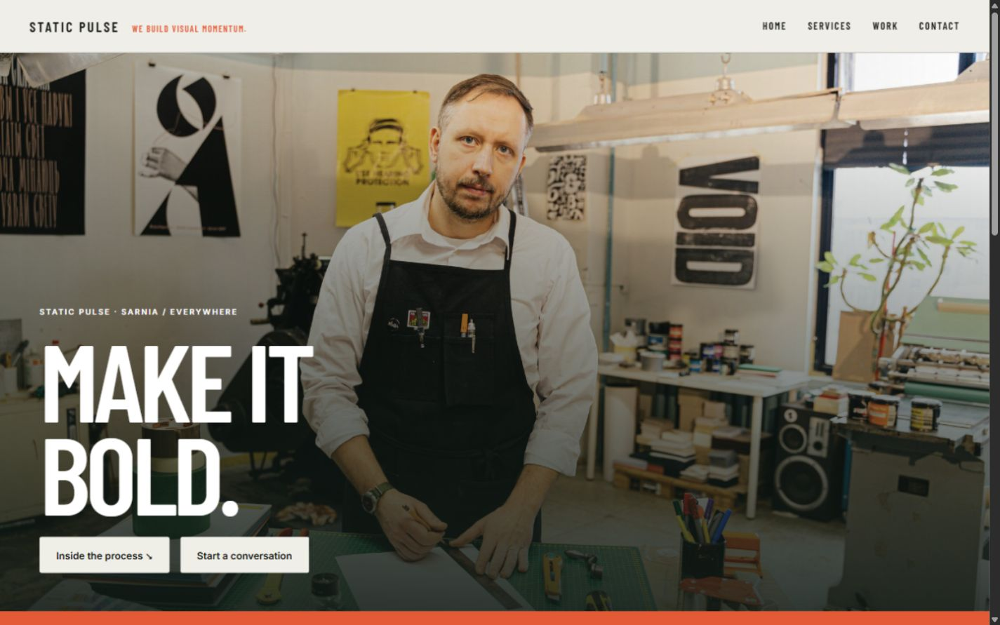

Visit website ↗︎Live website / Photography
MM Photographi
Photography and film,
front and centre.
For people doing something that matters
Websites for churches, nonprofits
and businesses with something to say.
01 / A little more human
A clear story. A memorable first impression. A website that feels like you. I bring design and practical digital support together to help your next chapter take shape.
02 / Out in the world
A church finding its voice.
A photographer holding on to a feeling.
Here’s what that looks like online.

Visit website ↗︎Live website / Photography
Photography and film,
front and centre.

Visit website ↗︎Live website / Church
A welcoming home
for a London church.
03 / Room to imagine
Five design explorations.
See what your next website could feel like.

Explore concept ↗︎01 / Not for profit

Explore concept ↗︎02 / Church

Explore concept ↗︎03 / Food & hospitality

Explore concept ↗︎04 / Salon

Explore concept ↗︎05 / Visual design
Scroll, swipe, or use the arrows to explore →
04 / The person behind the pixels
I’m Ebin, an independent web designer in Sarnia. You work directly with me, from figuring out what you need to bringing it all together.
A little more about me ↗︎Your next chapter starts with a conversation